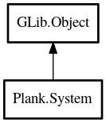

System
Object Hierarchy:

Description:
public class System : Object
A utility class for launching applications and opening files/URIs.
Content:
Properties:
- public AppLaunchContext context { construct; get; }
Static methods:
Creation methods:
- public System (AppLaunchContext context)
Methods:
- public void open_uri (string uri)
Opens a file based on a URI.
- public void open (File file)
Opens a file based on a GLib.File.
- public void open_files (File[] files)
Opens multiple files based on GLib.File
.
- public void launch (File app)
Launches an application.
- public void launch_with_files (File? app, File[] files)
Launches an application and opens files.
Inherited Members:
All known members inherited from class GLib.Object
- @new
- new_valist
- newv
- add_toggle_ref
- add_weak_pointer
- bind_property
- connect
- constructed
- disconnect
- dispose
- dup_data
- dup_qdata
- freeze_notify
- @get
- get_class
- get_data
- get_property
- get_qdata
- get_type
- notify_property
- @ref
- ref_sink
- replace_data
- replace_qdata
- remove_toggle_ref
- remove_weak_pointer
- @set
- set_data
- set_data_full
- set_property
- set_qdata
- set_qdata_full
- steal_data
- steal_qdata
- thaw_notify
- unref
- watch_closure
- weak_ref
- weak_unref
- notify
- ref_count